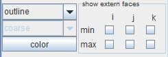
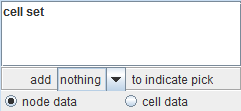

|
|
|
PRESENTATION PANEL
Presentation panel is a UI responsible for visual preferences of the geometry object available through the default GeometryOutput output port (red). It consists of two groups of parameters, the first one is data specific (different interface for regular and irregular fields and for different dimensionalities) while the second one is common for most modules with geometry object output. In SIMPLE version the parameters are limited only to the very basic features.
The first part of the panel depends on the type of the mapped field and has its own UI in the following cases:
3D Regular Field contents panel

This panel manipulates the contents of the 3D volume representation.
Using the drop down lists a representation of the field grid can be set up by choosing the grid representation - no grid, outline, point grid and line grid, and grid density - coarse, fine, very fine.
No grid option shows no grid representation.
Outline option shows only the volume box outline edges.
Point grid shows the positions of volume grid nodes.
Line grid shows the positions of volume grid nodes connected by the proper neighbourhood.
Irregular Field cell set panel

Irregular Field cell set panel allows to choose if the data mapped by Colormapping Panel is taken from field node values or cell values for a chosen cell set. It can be also set what type of geometric representation is added to the object picked in Viewer3D to highlight it.
Usually two parts are common for all modules: colormapping panel and geometry panel.